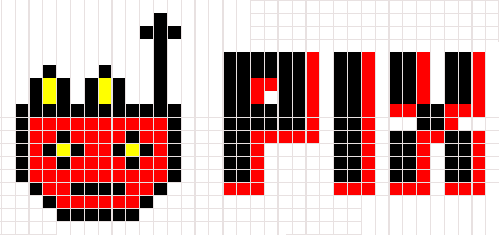
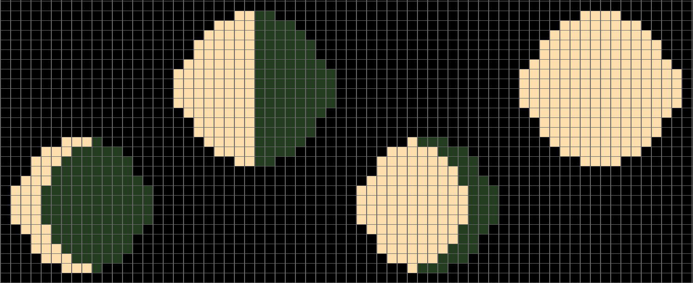
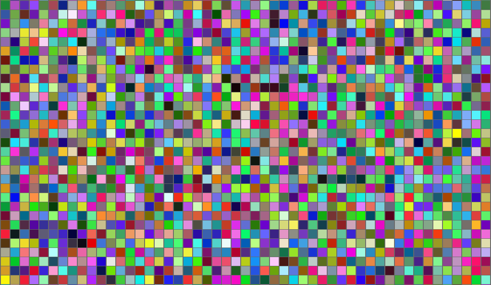
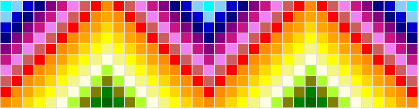
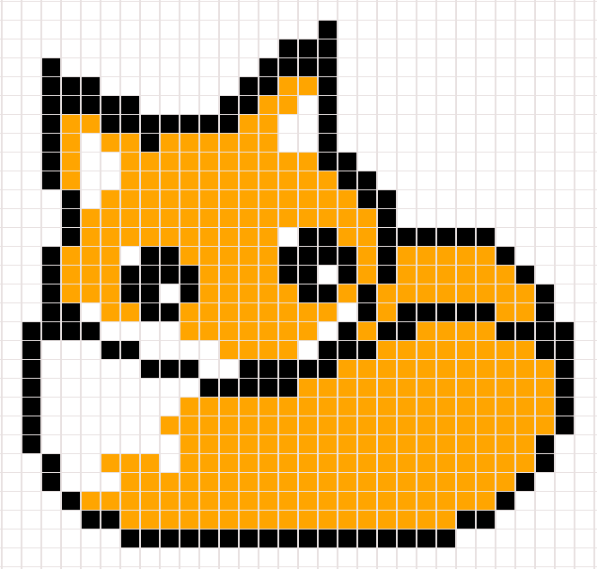

|
Что можно делать в PIX?
В PIX можно создавать Pixel Art изображения, для этого в нём имеется несколько различных инструментов.
Какие возможности есть в PIX?
- Выбор из 16777216 цветов, которые можно задать шестнадацатеричным кодом (36 наиболее частых есть в панели);
- Два режима рисования: по отдельным квадратикам и линиями, следующими за мышью;
- Два режима стирания: по отдельным квадратикам и линиями, следующими за мышью;
- Режим наложения цвета, который позволяет задать фон любого цвета, не закрашивая сделанный рисунок;
- Большой холст, на котором может поместиться несколько работ (30056 квадратов);
- Возможность сделать фон разноцветным по нажатию одной клавиши;
- В PIX Animation можно сохранять поля (до 50 полей) и перемещаться между ними, а также воспроизвести их, как слайд-шоу;
- Возможность сменить тему со стандартной на неоновую (цвет холста и заднего фона);
- Удобное меню, которое можно скрыть или вызвать нажатием клавиши Q.
Скриншоты некоторых работ в PIX:





|